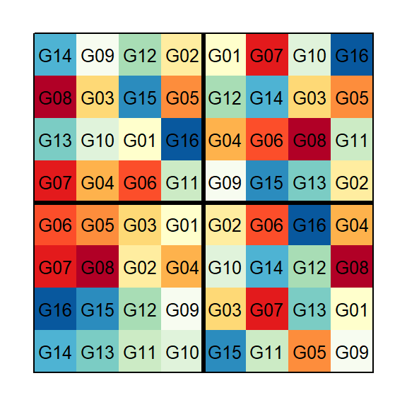
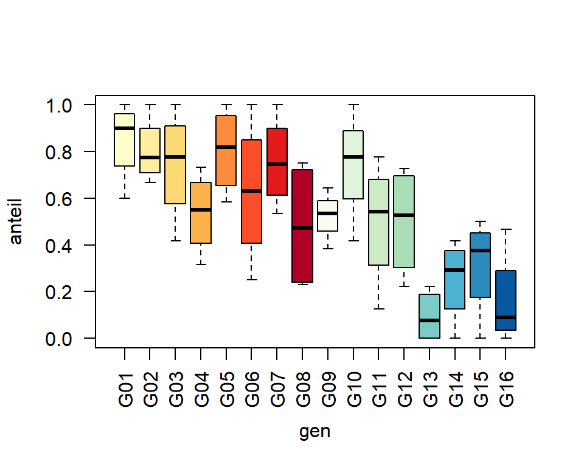
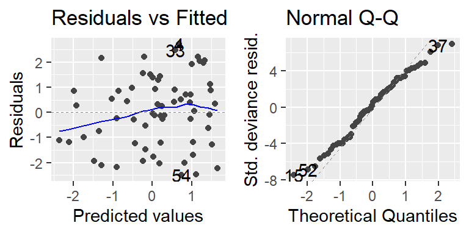
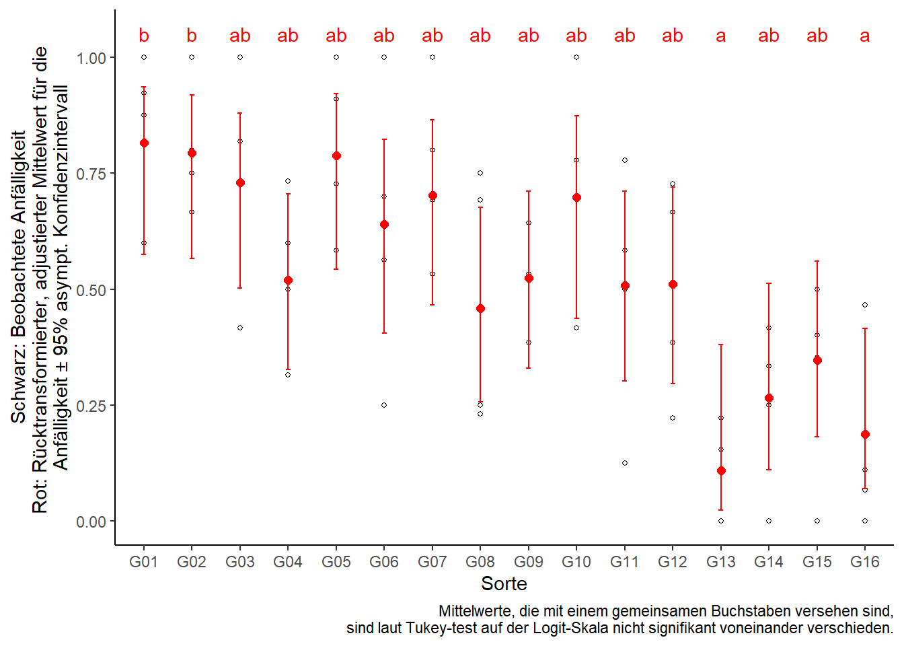

Prozentwerte & Proportionen
Datensatz
library(data.table) # bessere Datenmanipulation
library(ggplot2); library(ggfortify) # bessere Plots
library(emmeans) # adjustierte MittelwerteIn diesem Beispiel wurden 16 Weizensorten in einer randomisierten vollständigen Blockanlage mit 4 Wiederholungen geprüft.
Die Auswertung dieses Datensatzes ist auch hier in der
PROC GLIMMIXSAS Dokumentation beschrieben.
## Warning in if (class(data) == "formula") {: the condition has length > 1 and only
## the first element will be used
Allerdings wurde nicht wie so oft in den vorangegangenen Beispiel der Ertrag gemessen, sondern die Anfälligkeit gegen die Hessenfliege (Mayetiola destructor). Dies geschah indem in jeder Parzelle die Gesamtzahl an Pflanzen (n), sowie die Anzahl derer Pflanzen, die befallen waren (y) bestimmt wurden. Demnach repräsentiert der Anteil y/n die Anfälligkeit gegen die Hessenfliege und kann in % angegeben werden. Wir können eine neue Spalte erstellen, die diesen Anteil angibt.
wheat[, anteil := y/n] # erstelle Spalte "anteil"print(wheat, nrows=10)## block gen y n anteil
## 1: B1 G14 2 8 0.2500000
## 2: B1 G16 1 9 0.1111111
## 3: B1 G07 9 13 0.6923077
## 4: B1 G06 9 9 1.0000000
## 5: B1 G13 2 9 0.2222222
## ---
## 60: B4 G10 6 6 1.0000000
## 61: B4 G02 8 12 0.6666667
## 62: B4 G11 7 9 0.7777778
## 63: B4 G05 10 11 0.9090909
## 64: B4 G16 7 15 0.4666667str(wheat)## Classes 'data.table' and 'data.frame': 64 obs. of 5 variables:
## $ block : Factor w/ 4 levels "B1","B"..
## $ gen : Factor w/ 16 levels "G01","..
## $ y : int 2 1 9 9 2 7 6 8 7 8 ...
## $ n : int 8 9 13 9 9 14 8 11 12 ..
## $ anteil: num 0.25 0.111 0.692 1 0.2..
## - attr(*, ".internal.selfref")=<exter..Deskriptive Statistik
Erst wollen wir ein Gefühl für den Datensatz bekommen und betrachten einen Boxplot für die Anteile der befallenen Pflanzen pro Sorte. Die Füllfarben die Boxen sind dieselben Farben wie im Feldplan und wurden zuvor von uns im Vektor genfarben gespeichert - mehr Infos dazu hier.
boxplot(anteil ~ gen, col=genfarben, data=wheat, las=2) # las=2 dreht die Achsenbeschriftung
Schließende Statistik
Generalisiertes Modell
Da es sich in diesem Beispiel bei der Zielvariable um einen Prozentwert bzw. einen Anteil handelt, liegen die Werte zwischen 0 und 1 (i.e. 0-100%). Wir haben also binomialverteilte Daten und wollen ein generalisiertes lineares Modell anpassen (mehr dazu hier). Dies geht z.B. mit der glm() Funktion. Bezüglich der Effekte im Modell verfahren wir wie bei einer einfaktoriellen ANOVA in einem RCBD.
mod <- glm(y/n ~ block + gen, weights=n, family=quasibinomial(link="logit"), data=wheat)Wie man sehen kann, wäre das vorige Berechnen der anteil-Spalte für das Aufstellen des Modells nicht nötig gewesen, da wir direkt y/n als Zielvariable schreiben können. Wichtig ist dabei aber, dass wir dann auch immer noch weights=n dazuschreiben müssen! Als erwartete Verteilung schreiben wir hier family=quasibinomial, welche sozusagen eine generelle/robustere Version der genannten Binomialverteilung für die Fehler annimmt (mehr dazu hier). Der Zusatz (link="logit") ist hier eigentlich überflüssig, weil dies die standardmäßige Linkfunktion für binomialverteilte Daten ist. Sie wird hier lediglich zur Verdeutlichung mit ins Modell geschrieben. Da glm() eine Basis-Funktion von R ist - also kein extra package benötigt - können Residuenplots wieder einfach mit der autoplot() Funktion des ggfortify packages betrachtet werden:
autoplot(mod)[1:2] # Residuenplots ## Test der festen Effekte
anova(mod, test="Chisq")## Analysis of Deviance Table
##
## Model: quasibinomial, link: logit
##
## Response: y/n
##
## Terms added sequentially (first to last)
##
##
## Df Deviance Resid. Df Resid. Dev Pr(>Chi)
## NULL 63 258.68
## block 3 2.11 60 256.57 0.828
## gen 15 132.62 45 123.95 1.256e-06 ***
## ---
## Signif. codes: 0 '***' 0.001 '**' 0.01 '*' 0.05 '.' 0.1 ' ' 1car::Anova(mod, test.statistic="Wald")## Analysis of Deviance Table (Type II tests)
##
## Response: y/n
## Df Chisq Pr(>Chisq)
## block 3 1.7916 0.6167545
## gen 15 44.0151 0.0001094 ***
## ---
## Signif. codes: 0 '***' 0.001 '**' 0.01 '*' 0.05 '.' 0.1 ' ' 1Es soll an diesem Punkt angemerkt werden, dass eine ANOVA im ursprünglichen Sinne (i.e. Quadratsummenzerlegung) nicht geeignet ist für generalisierte Modelle (Mehr dazu beispielsweise in Piepho (1999)). Dennoch kann die anova() Funktion in R auch für Modell-Objekte aus der glm() Funktion angewendet werden, da in diesem Fall eine andere Berechnung (i.e. Analysis of Deviance) durchgeführt wird. Um allerdings weiterhin p-Werte zu erhalten, muss hier z.B. das Argument test="Chisq" hinzugefügt werden (siehe ?anova.glm für Details). Alternativ kann auch ein Wald-Test mit der Anova()-Funktion aus dem car-package und dem Argument test.statistic="Wald" durchgeführt werden.
Der p-Wert für den Sorteneffekt weist in jedem Fall deutlich auf unterschiedliche Anfälligkeiten der Sorten hin.
Multipler Mittelwertvergleich
Auch für generalisierte lineare Modelle eignet sich das emmeans() package zur Schätzung der adjustierten Mittelwerte. Es ist sogar möglich direkt die rücktransformierten Mittelwerte schätzen zu lassen. Dazu muss lediglich type="response" hinzugefügt werden.
means <- emmeans(mod, pairwise ~ gen, type="response") # Mittelwertvergleiche
means <- CLD(means$emmeans, Letters = letters) # Buchstabenddarstellung
means$.group <- gsub(" ", "", means$.group, fixed = TRUE) # Entferne Leerzeichen
means## gen prob SE df asymp.LCL asymp.UCL .group
## G13 0.1096695 0.08015208 Inf 0.0240563 0.3810171 a
## G16 0.1877818 0.08721538 Inf 0.0700935 0.4149056 a
## G14 0.2653243 0.10621731 Inf 0.1104184 0.5123780 ab
## G15 0.3474510 0.10066214 Inf 0.1823600 0.5596926 ab
## G08 0.4591115 0.11377640 Inf 0.2569434 0.6756990 ab
## G11 0.5078141 0.11096378 Inf 0.3017679 0.7112395 ab
## G12 0.5105842 0.11528955 Inf 0.2969393 0.7204313 ab
## G04 0.5189702 0.10163084 Inf 0.3269521 0.7055434 ab
## G09 0.5239933 0.10227434 Inf 0.3301250 0.7108907 ab
## G06 0.6401054 0.11281144 Inf 0.4051711 0.8228253 ab
## G10 0.6987352 0.11784284 Inf 0.4363647 0.8741865 ab
## G07 0.7028341 0.10621641 Inf 0.4660713 0.8650151 ab
## G03 0.7303351 0.09944380 Inf 0.5016697 0.8793159 ab
## G05 0.7881716 0.09706373 Inf 0.5435088 0.9208099 ab
## G02 0.7933597 0.09051044 Inf 0.5654256 0.9188917 b
## G01 0.8155320 0.09085289 Inf 0.5751050 0.9352342 b
##
## Results are averaged over the levels of: block
## Confidence level used: 0.95
## Intervals are back-transformed from the logit scale
## P value adjustment: tukey method for comparing a family of 16 estimates
## Tests are performed on the log odds ratio scale
## significance level used: alpha = 0.05Ergebnisaufbereitung
ggplot() + theme_classic() +
# Rohdaten (wheat)
geom_point(data=wheat, aes(x=gen, y=anteil), shape=1, size=1) +
# Ergebnisse (means)
geom_point(data=means, aes(x=gen, y=prob), col="red", shape=16, size=2) +
geom_errorbar(data=means, aes(x=gen, ymin=asymp.LCL, ymax=asymp.UCL), col="red", width=0.1) +
geom_text(data=means, aes(x=gen, y=1.05, label =.group), col="red") +
labs(y="Schwarz: Beobachtete Anfälligkeit\nRot: Rücktransformierter, adjustierter Mittelwert für die \nAnfälligkeit ± 95% asympt. Konfidenzintervall", x="Sorte",
caption="Mittelwerte, die mit einem gemeinsamen Buchstaben versehen sind,\n sind laut Tukey-test auf der Logit-Skala nicht signifikant voneinander verschieden.")
Bei Fragen kannst du mir gerne schreiben!
schmidtpaul@hotmail.de